我已经67岁了，坐在这里，为的是要写点类似自己的讣告那样的东西。我做这件事，不仅因为希耳普博士已经说服了我，而且我自己也确实相信，向共同奋斗着的人们讲一讲一个人自己努力和探索过的事情在回顾中看起来是怎样的，那该是一件好事。稍作考虑以后，我就觉得，这种尝试的结果肯定不会是完美无缺的。因为，工作的一生不论怎样短暂和有限，其间经历的歧途不论怎样占优势，要把那些值得讲的东西讲清楚，毕竟是不容易的——现在67岁的人已完全不同于他50岁、30岁或者20岁的时候了。任何回忆都染上了当前的色彩，因而也带有不可靠的观点。这种考虑可能使人畏难而退。然而，一个人还是可以从自己的经验里提取许多别人所意识不到的东西。
当我还是一个相当早熟的少年的时候，我就已经深切地意识到，大多数人终生无休止地追逐的那些希望和努力是毫无价值的。而且，我不久就发现了这种追逐的残酷，这在当年较之今天是更加精心地用伪善和漂亮的字句掩饰着的。每个人只是因为有个胃，就注定要参与这种追逐。而且，由于参与这种追逐，他的胃是有可能得到满足的；但是，一个有思想、有感情的人却不能由此而得到满足。这样，第一条出路就是宗教，它通过传统的教育机关灌输给每一个儿童。因此，尽管我是完全没有宗教信仰的（犹太人）双亲的儿子，我还是深深地信仰宗教。但是，这种信仰在我12岁那年就突然中止了。由于读了通俗的科学书籍，我很快就相信，《圣经》里的故事有许多不可能是真实的。其结果就是一种真正狂热的自由思想，并且交织着这样一种印象： 国家是故意用谎言来欺骗年轻人的。这是一种令人目瞪口呆的印象。这种经验引起我对所有权威的怀疑，对任何社会环境里都会存在的信念完全抱一种怀疑态度。这种态度再也没有离开过我，即使在后来，由于更好地搞清楚了因果关系，它已失去了原有的尖锐性时也是如此。
我很清楚，少年时代的宗教天堂就这样失去了。这是使我自己从“仅仅作为个人”的桎梏中，从那种被愿望、希望和原始感情所支配的生活中解放出来的第一个尝试。在我们之外有一个巨大的世界，它离开我们人类而独立存在，它在我们面前就像一个伟大而永恒的谜，然而至少部分地是我们的观察和思维所能及的。对这个世界的凝视深思，就像得到解放一样吸引着我们，而且我不久就注意到，许多我所尊敬和钦佩的人，在专心从事这项事业中，找到了内心的自由和安宁。在向我们提供的一切可能范围里，从思想上掌握这个在个人以外的世界，总是作为一个最高目标而有意无意地浮现在我的心目中。有类似想法的古今人物，以及他们已经达到的真知灼见，都是我的不可失去的朋友。通向这个天堂的道路，并不像通向宗教天堂的道路那样舒坦和诱人，但是，它已证明是可以信赖的，而且我从来也没有为选择了这条道路而后悔过。
我在这里所说的，仅仅在一定意义上是正确的，正像一张不多几笔的画，只能在很有限的意义上反映出一个细节混乱的复杂对象一样。如果一个人爱好很有条理的思想，那么他的本性的这一方面很可能以牺牲其他方面为代价而显得更为突出，并且愈来愈明显地决定着他的精神面貌。在这种情况下，这样的人在回顾中所看到的，很可能只是一种千篇一律的有系统的发展，然而，他的实际经验却是在千变万化的单个情况中发生的。外界情况是多种多样的，意识的瞬息内容是狭隘的，这就引起了每一个人生活的一种原子化。像我这种类型的人，其发展的转折点在于，自己的主要兴趣逐渐远远地摆脱了短暂的和仅仅作为个人的方面，而转向力求从思想上去掌握事物。从这个观点看来，可以像上面这样简要地说出来的纲要式的评述里，已包含着尽可能多的真理了。
准确地说，“思维”是什么呢？当接受感觉印象时出现记忆形象，这还不是“思维”。而且，当这样一些形象形成一个系列时，其中每一个形象引起另一个形象，这也还不是“思维”。可是，当某一形象在许多这样的系列中反复出现时，那么，正是由于这种再现，它就成为这种系列的一个起支配作用的元素，因为它把那些本身没有联系的系列联结了起来。这种元素便成为一种工具，一种概念。我认为，从自由联想或者“做梦”到思维的过渡，是由“概念”在其中所起的或多或少的支配作用来表征的。概念绝不是一定要同通过感觉可以知觉的和可以再现的符号（词）联系起来的；但是如果有了这样的联系，那么思维因此就成为可以交流的了。
读者会问，这个人有什么权利，在这样一个有问题的领域里，如此轻率而原始地运用观念，而不作丝毫努力去作点证明呢。我的辩护是： 我们的一切思维都是概念的一种自由游戏；至于这种游戏的合理性，那就要看我们借助于它来概括感觉经验所能达到的程度。“真理”这个概念还不能用于这样的结构；按照我的意见，只有在这种游戏的元素和规则已经取得了广泛的一致意见（约定）的时候，才谈得上这个“真理”概念。
对我来说，毫无疑问，我们的思维不用符号（词）绝大部分也都能进行，而且在很大程度上是无意识地进行的。否则，为什么我们有时会完全自发地对某一经验感到“惊奇”呢？这种“惊奇”似乎只是当经验同我们的充分固定的概念世界有冲突时才会发生。每当我们尖锐而强烈地经历到这种冲突时，它就会以一种决定性的方式反过来作用于我们的思维世界。这个思维世界的发展，在某种意义上说就是对“惊奇”的不断摆脱。
当我还是一个四五岁的小孩，在父亲给我看一个罗盘的时候，就经历过这种惊奇。这只指南针以如此确定的方式行动，根本不符合那些在无意识的概念世界中能找到位置的事物的本性（同直接“接触”有关的作用）。我现在还记得，至少相信我还记得，这种经验给我一个深刻而持久的印象。我想一定有什么东西深深地隐藏在事情后面。凡是人从小就看到的事情，不会引起这种反应；他对于物体下落，对于风和雨，对于月亮或者对于月亮不会掉下来，对于生物和非生物之间的区别等都不感到惊奇。
在12岁时，我经历了另一种性质完全不同的惊奇： 这是在一个学年开始时，当我得到一本关于欧几里得平面几何的小书时所经历的。这本书里有许多断言，比如，三角形的三个高交于一点，它们本身虽然并不是显而易见的，但是可以很可靠地加以证明，以致任何怀疑似乎都不可能。这种明晰性和可靠性给我造成了一种难以形容的印象。至于不用证明就得承认公理，这件事并没有使我不安。如果我能依据一些其有效性在我看来是毋庸置疑的命题来加以证明，那么我就完全心满意足了。比如，我记得，在这本神圣的几何学小书到我手中以前，有位叔叔 [2] 曾经把毕达哥拉斯定理告诉了我。经过艰苦的努力以后，我根据三角形的相似性成功地“证明了”这条定理。在这样做的时候，我觉得，直角三角形各个边的关系“显然”完全决定于它的一个锐角。在我看来，只有在类似方式中不是表现得很“显然”的东西，才需要证明。而且，几何学研究的对象，同那些“能被看到和摸到的”感官知觉的对象似乎是同一类型的东西。这种原始观念的根源，自然是由于不知不觉地存在着几何概念同直接经验对象（刚性杆、截段等等）的关系，这种原始观念大概也就是康德（I.Kant）提出那个著名的关于“先验综合判断”可能性问题的根据。
如果因此好像用纯粹思维就可能得到关于经验对象的可靠知识，那么这种“惊奇”就是以错误为依据的。但是，对于第一次得到这种经验的人来说，在纯粹思维中竟能达到如此可靠而又纯粹的程度，就像希腊人在几何学中第一次告诉我们的那样，是足够令人惊讶的了。
既然我已经打断了刚开始的讣告而且扯远了，因此，我将毫不踌躇地在这里用几句话来说明我的认识论信条，虽然有些话在前面已经顺便谈过了。这个信条实际上是在很久以后才慢慢地发展起来的，而且同我年轻时候所持的观点并不一致。
我一方面看到感觉经验的总和，另一方面又看到书中记载的概念和命题的总和。概念和命题之间的相互关系具有逻辑的性质，而逻辑思维的任务则严格限于按照一些既定的规则（这是逻辑学研究的问题）来建立概念和命题之间的相互关系。概念和命题只有通过它们同感觉经验的联系才获得其“意义”和“内容”。后者同前者的联系纯粹是直觉的联系，并不具有逻辑的本性。科学“真理”同空洞幻想的区别就在于这种联系，即这种直觉的结合能够被保证的可靠程度，而不是别的什么。概念体系连同那些构成概念体系结构的句法规则都是人的创造物。虽然概念体系本身在逻辑上完全是任意的，可是它们受到这样一个目标的限制，就是要尽可能做到同感觉经验的总和有可靠的（直觉的）和完备的对应（Zuordnung）关系。其次，它们应当使逻辑上独立的元素（基本概念和公理），即不下定义的概念和推导不出的命题，要尽可能的少。
命题如果是在某一逻辑体系里按照公认的逻辑规则推导出来的，它就是正确的。体系所具有的真理内容取决于它同经验总和的对应可能性的可靠性和完备性。正确的命题是从它所属的体系的真理内容中取得其“真理性”的。
对历史发展的一点意见。休谟（David Hume）清楚地了解到，有些概念，比如因果性概念，是不能用逻辑方法从经验材料中推导出来的。康德完全确信某些概念是不可缺少的，他认为这些概念——它们正是这样挑选出来的——是任何思维的必要前提，并且把它们同那些来自经验的概念区别开来。但是，我相信，这种区分是错误的，那就是说，它不是按自然的方式来正确对待问题的。一切概念，甚至那些最接近经验的概念，从逻辑观点看来，完全像因果性概念一样，都是一些自由选择的约定，而这个问题首先是从因果性概念提出来的。
现在再回到讣告上来。在12-16岁的时候，我熟悉了基础数学，包括微积分原理。这时，我幸运地接触到一些书，它们在逻辑严密性方面并不太严格，但是能够简单明了地突出基本思想。总的说来，这个学习确实是令人神往的。它给我的印象之深并不亚于初等几何，好几次达到了顶点——解析几何的基本思想，无穷级数，微分和积分概念。我还幸运地从一部卓越的通俗读物中知道了整个自然科学领域里的主要成果和方法。这部著作就是伯恩斯坦（A. Bernstein）的《自然科学通俗读本》。这一部五六卷的著作几乎完全局限于定性的叙述，这是一部我聚精会神地阅读了的著作。当我17岁那年作为数学和物理学的学生进入苏黎世工业大学时，我已经学过一些理论物理学了。
在那里，我有几位卓越的老师，比如胡尔维兹（A.Hurwitz）、闵可夫斯基（H.Minkowski），所以照理说，我应该在数学方面得到深造。可是我大部分时间却是在物理实验室里工作，迷恋于同经验直接接触。其余时间，则主要用于在家里阅读基尔霍夫（G.R.Kirchhoff）、亥姆霍兹（H.L.F.von Helmholtz）、赫兹（H.R.Hertz）等人的著作 [3] 。我在一定程度上忽视了数学，其原因不仅在于我对自然科学的兴趣超过对数学的兴趣，而且还在于下述奇特的经验。我看到数学分成许多专门领域，每一个领域都能费去我们所能有的短暂的一生。因此，我觉得自己的处境像布里丹的驴子 [4] 一样，它不能决定究竟该吃哪一捆干草。这显然是由于我在数学领域里的直觉能力不够强，以致不能把真正带有根本性的最重要的东西同其余那些多少是可有可无的广博知识可靠地区分开来。此外，我对自然知识的兴趣，无疑地也比较强；而且作为一个学生，我还不清楚，在物理学中，通向更深入的基本知识的道路是同最精密的数学方法联系着的。只是在几年独立的科学研究工作以后，我才逐渐地明白了这一点。诚然，物理学也分成了各个领域，其中每一个领域都能吞噬短暂的一生，而且还没有满足对更深邃的知识的渴望。在这里，已有的而且尚未充分地被联系起来的实验数据的数量也是非常大的。可是，在这个领域里，我不久就学会了识别出那种能导致深邃知识的东西，而把其他许多东西撇开不管，把许多充塞脑袋、并使它偏离主要目标的东西撇开不管。当然，这里的问题在于，人们为了考试，不论愿意与否，都得把所有这些废物统统塞进自己的脑袋。这种强制的结果使我如此畏缩不前，以致在我通过最后的考试以后有整整一年对科学问题的任何思考都感到扫兴。但是得说句公道话，我们在瑞士所受到的这种窒息真正科学动力的强制，比其他许多地方要少得多。这里一共只有两次考试，除此以外，人们差不多可以做他们愿意做的任何事情。如果能像我这样，有个朋友经常去听课，并且认真地整理讲课内容，那情况就更是如此了。这种情况给予人们以选择从事什么研究的自由，直到考试前几个月为止。我大大地享受了这种自由，并把与此伴随而来的内疚看作是乐意忍受的微不足道的弊病。现代的教学方法，竟然还没有把研究问题的神圣好奇心完全扼杀掉，真可以说是一个奇迹。因为这株脆弱的幼苗，除了需要鼓励以外，主要需要自由；要是没有自由，它就不可避免地会夭折。认为用强制和责任感就能增进观察和探索的乐趣，那是一种严重的错误。我想，即使是一头健康的猛兽，当它不饿的时候，如果用鞭子强迫它不断地吞食（特别是，当人们强迫喂给它吃的食物是经过适当选择的时候），是会使它丧失贪吃的习性的。
现在来谈当时物理学的情况。当时物理学在各个细节上虽然取得了丰硕的成果，但在原则问题上居统治地位的是教条式的顽固： 开始时（假如有这样的开始）上帝创造了牛顿（I.Newton）运动定律以及必需的质量和力。这就是一切；此外一切都可以用演绎法从适当的数学方法发展出来。在这个基础上，特别是由于偏微分方程的应用，19世纪所取得的成就必然会引起所有有敏锐理解能力的人的赞叹。牛顿也许是第一个在他的声传播理论中揭示了偏微分方程的功效的人。欧拉（L.Euler）已经创立了流体动力学的基础。但是，作为整个物理学基础的质点力学的更加精确的发展，则是19世纪的成就。然而，对于一个大学生来说，印象最深刻的并不是力学的专门结构或者它所解决的复杂问题，而是力学在那些表面上同力学无关的领域中的成就： 光的力学理论，它把光设想为准刚性的弹性以太的波动，但是首先是气体分子运动论： ——单原子气体比热同原子量无关，气体状态方程的导出及其同比热的关系，气体离解的分子运动论，特别是气体的黏滞性、热传导和扩散之间的定量关系，而且气体扩散还提供了原子的绝对大小。这些结果同时支持了力学作为物理学和原子假说的基础，而后者在化学中已经牢固地确立了它的地位。但是在化学中起作用的仅仅是原子的质量之比，而不是它们的绝对大小，因此原子论与其看做关于物质的实在结构的一种认识，不如看做一种形象化的比喻。此外，古典力学的统计理论能够导出热力学的基本定律，也是令人深感兴趣的，这在本质上已经由玻耳兹曼（L.Boltzmann）完成了。
因此我们不必惊奇，可以说19世纪所有的物理学家，都把古典力学看做全部物理学的、甚至是全部自然科学的牢固的和最终的基础，而且，他们还孜孜不倦地企图把这一时期逐渐取得全面胜利的麦克斯韦（J.C.Maxwell）电磁理论也建立在力学的基础之上。甚至连麦克斯韦和H. 赫兹，在他们自觉的思考中，也都始终坚信力学是物理学的可靠基础，而我们在回顾中可以公道地把他们看成是动摇了以力学作为一切物理学思想的最终基础这一信念的人。是恩斯特·马赫（Ernst Mach），在他的《力学史》中冲击了这种教条式的信念。当我是一个学生的时候 [5] ，这本书正是在这方面给了我深刻的影响。我认为，马赫的真正伟大，就在于他的坚不可摧的怀疑态度和独立性。在我年轻的时候，马赫的认识论观点对我也有过很大的影响，但是，这种观点今天在我看来是根本站不住脚的。因为他没有正确阐明，思想中，特别是科学思想中，本质上是构造的和思辨的性质；因此，正是在理论的构造-思辨的特征赤裸裸地表现出来的那些地方，他却指责了理论，比如在原子运动论中就是这样。
在我开始批判那个作为物理学基础的力学以前，首先必须谈谈某些一般观点。根据这些观点，才有可能去批判各种物理理论。第一个观点是很明显的： 理论不应当同经验事实相矛盾。这个要求初看起来似乎很明显，但应用起来却非常伤脑筋。因为人们常常，甚至总是可以用人为的补充假设来使理论同事实相适应，从而坚持一种普遍的理论基础。但是，无论如何，这第一个观点所涉及的是用现成的经验事实来证实理论基础。
第二个观点涉及的不是关于〔理论〕同观察材料的关系问题，而是关于理论本身的前提，关于人们可以简单地、但比较含糊地称之为前提（基本概念以及这些概念之间作为基础的关系）的“自然性”或者“逻辑的简单性”。这个观点从来都在选择和评价各种理论时起着重大的作用，但是确切地把它表达出来却有很大困难。这里的问题不单是一种列举逻辑上独立的前提问题（如果这种列举竟是毫不含糊地可能的话），而是一种在不能比较的性质间作相互权衡的问题。其次，在几种基础同样“简单”的理论中，那种对理论体系的可能性质限制最严格的理论（即含有最确定的论点的理论）被认为是比较优越的。这里我不需要讲到理论的“范围”，因为我们只限于这样一些理论，它们的对象是一切物理现象的总和。第二个观点可以简要地称为同理论本身有关的“内在的完备”，而第一个观点则涉及“外部的证实”。我认为下面这一点也属于理论的“内在的完备”： 从逻辑观点来看，如果一种理论并不是从那些等价的和以类似方式构造起来的理论中任意选出的，那么我们就给予这种理论以较高的评价。
我不想用篇幅不够来为上面两段话中包含的论点不够明确求得原谅。而要在这里承认，我不能立刻，也许根本就没有能力用明确的定义来代替这些提示。但是，我相信，要作比较明确的阐述还是可能的。无论如何，可以看到，“预言家”们在判断理论的“内在的完备”时，他们之间的意见往往是一致的，至于对“外部的证实”程度的判断，情况就更是如此了。
现在来批判作为物理学基础的力学。
从第一个观点（实验证实）来看，把波动光学纳入机械的世界图像，必将引起严重的疑虑。如果把光解释为一种弹性体（以太）中的波动，那么这种物体就应当是一种能透过一切东西的媒质。由于光波的横向性，这种媒质大体上像一种固体，并且又是不可压缩的，从而纵波并不存在。这种以太必须像幽灵似的同其他物质并存着，因为它对“有重”物体的运动似乎不产生任何阻力。为了解释透明物体的折射率以及辐射的发射和吸收过程，人们必须假定在这两种物质之间有着复杂的相互作用，这件事从来也没有认真地尝试过，更谈不上有什么成就。
此外，电磁力还迫使我们引进一种带电物质，它们虽然没有显著的惯性，但是却能相互作用，并且这种相互作用完全不同于引力，而是属于一种具有极性的类型。
法拉第（M.Faraday）-麦克斯韦的电动力学，使物理学家们在长期犹豫不决之后，终于逐渐地放弃了有可能把全部物理学建立在牛顿力学之上的信念。因为这一理论以及赫兹实验对它的证实表明： 存在着这样一种电磁现象，它们换其本性完全不同于任何有重物质——它们是在空虚空间里由电磁“场”组成的波。人们如果要保持力学作为物理学的基础，那就必须对麦克斯韦方程作力学的解释。这件事曾极其努力地尝试过，但毫无结果，而这方程本身则越来越被证明是富有成效的。人们习惯于把这些场当做独立的实体来处理，而并不觉得有必要去证明它们的力学本性。这样，人们几乎不知不觉地放弃了把力学作为物理学的基础，因为要使力学适合于各种事实，看来终于是没有希望了。从那时候起，就存在着两种概念元素： 一方面是质点以及它们之间的超距作用力，另一方面是连续的场。这表现为物理学的一种过渡状态，它没有一个适合于全体的统一的基础。这种状态虽然不能令人满意，但是，要代替它还差得很远。
现在，从第二个观点，即从内在的观点来对作为物理学基础的力学提出一些批判。在今天的科学状况下，也就是在抛弃了力学基础以后，这种批判只有方法论上的意义了。但是，这种批判很适合于说明一种论证方法。今后，当基本概念和公理距离直接可观察的东西愈来愈远，以致用事实来验证理论的含意也就变得愈来愈困难和更费时日的时候，这种论证方法对于理论的选择就一定会起更大的作用。这里首先要提到的是马赫的论证，其实，这早已被牛顿清楚地认识到了（水桶实验）。从纯粹几何描述的观点来看，一切“刚性的”坐标系在逻辑上都是等价的。力学方程（比如，惯性定律就是这样）只有对某一类特殊的坐标系，即“惯性系”才是有效的。至于坐标系究竟是不是有形客体，在这里倒并不重要。因此，为了说明这种特殊选择的必要性，就必须在理论所涉及的对象（物体、距离）之外去寻找某些东西。为此，牛顿十分明白地像因果上规定的那样，引进了“绝对空间”，它是一切力学过程的一个无所不在的积极参与者；所谓“绝对”，他指的显然是不受物体及其运动的影响。使这种事态特别显得令人讨厌的是这样的事实： 应当有无限个相互作匀速平移运动的惯性系存在，它们比一切别的刚性坐标系都要优越。
马赫推测，在一个真正合理的理论中，惯性正像牛顿的其他各种力一样，也必须取决于物体的相互作用。我有很长一个时期认为这种想法原则上是正确的。但是，它暗中预先假定，基本理论应当具有牛顿力学的一般类型： 以物体和它们的相互作用作为原始概念。人们立刻就会看出，这种解决问题的企图同贯彻一致的场论是不适合的。
然而，人们可以从下述类比中特别清楚地看到，马赫的批判本质上是多么正确。试设想，有人要创立一种力学，但他们只知道地面上很小的一部分，而且也看不到任何星体。于是他们会倾向于把一些特殊的物理属性给予空间的竖直方向（落体的加速度方向），而且根据这种概念基础，就有理由认为大地大体上是水平的。他们可能不会受下述论点的影响，这种论点认为，空间就几何性质来说是各向同性的，因而在建立物理学的基本定律时又认为按照这些定律应该有一个优先的方向，那是不能令人满意的；他们可能（像牛顿一样）倾向于断言竖直方向是绝对的，因为，这是经验证明了的，人们必须对此感到心安理得。竖直方向比所有其他空间方向更优越，同惯性系比其他刚性坐标系更优越，是完全类似的。
现在来谈其他论证，这些论证也同力学的内在的简单性或自然性有关。如果人们未经批判的怀疑就接受了空间（包括几何）和时间概念，那就没有理由反对超距作用力的观念，即使这个概念同人们在日常生活的未经加工的经验基础上形成的观念并不符合。但是，还有另一个因素使得那种把力学当作物理学基础的看法显得很幼稚。〔力学〕主要有两条定律：
1. 运动定律；
2. 关于力或势能的表示式。
运动定律是精确的，不过在力的表示式还没有定出以前，它是空洞的。但是，在规定力的表示式时，还有很大的任意〔选择〕的余地，尤其是当人们抛弃了力仅仅同坐标有关（比如同坐标对时间的微商无关）这个本身很不自然的要求时，情况就更是这样。从一个点发出的引力作用（和电力作用）受势函数（1/r ） [6] 支配，这在理论的框架里，本身完全是任意的。补充一点意见： 很久以前人们就已经知道，这函数是最简单的（转动不变的）微分方程δφ=0 [7] 的中心对称解。因此，如果认为这是一种迹象，表示这函数应当被看做是由空间定律决定的，那倒是一种容易了解的想法。按照这种做法，可以消除选择力定律的任意性。这实际上是使我们避开超距力理论的第一个认识，这种认识——由法拉第、麦克斯韦和赫兹开路的——只是在以后才在实验事实的外来压力下开始发展。
我还要提到这个理论的一种内在的不对称性，即在运动定律中出现的惯性质量也在引力定律中出现，但不在其他各种力的表示式中出现。最后我还想指出，把能量划分为本质上不同的两部分，即动能和势能，必须被认为是不自然的。H.赫兹对此深感不安，以致在他最后的著作中，曾企图把力学从势能概念（即从力的概念）中解放出来。
这已经够了。牛顿啊，请原谅我。你所发现的道路，在你那个时代，是一位具有最高思维能力和创造力的人所能发现的唯一的道路。你所创造的概念，甚至今天仍然指导着我们的物理学思想，虽然我们现在知道，如果要更加深入地理解各种联系，那就必须用另外一些离直接经验领域较远的概念来代替这些概念。
惊奇的读者可能会问：“难道这算是讣告吗？”我要回答说：“本质上是的。”因为像我这种类型的人，一生中主要的东西，正是在于他所想的是什么和他是怎样想的，而不在于他所做的或者所经受的是什么。所以，这讣告可以主要限于报道那些在我的努力中起重要作用的思想。一种理论的前提的简单性越大，它所涉及的事物的种类越多，它的应用范围越广，它给人们的印象也就越深。因此，古典热力学对我造成了深刻的印象。我确信，这是在它的基本概念可应用的范围内绝不会被推翻的唯一具有普遍内容的物理理论（这一点请那些原则上是怀疑论者的人特别注意）。
在我的学生时代，最使我着迷的课题是麦克斯韦理论。这理论从超距作用力过渡到以场作为基本变量，而使它成为革命的理论。光学并入电磁理论，连同光速同绝对电磁单位制的关系，以及折射率同介电常数的关系，反射系数同金属体的传导率之间的定性关系——这真好像是一种启示。在这里，除了转变为场论，即转变为用微分方程来表示基本定律外，麦克斯韦只需要一个唯一的假设性的步骤——在真空和电介质中引进位移电流及其磁效应。这种革新几乎是由微分方程的形式性质规定了的。谈到这里，我情不自禁地要说，在法拉第-麦克斯韦这一对同伽利略-牛顿这一对之间有非常值得注意的内在相似性——每一对中的第一位都直觉地抓住了事物的联系，而第二位则严格地用公式把这些联系表述了出来，并且定量地应用了它们。
当时使人难以看清电磁理论的本质的是下述特殊情况： 电或磁的“场强度”和“位移”都被当做同样基本的〔物理〕量来处理，而空虚空间则被认为是电介体的一种特殊情况。场的载体看来是物质，而不是空间。这就暗示了场的载体具有速度，而且，这当然也适用于“真空”（以太）。赫兹的动体的电动力学是完全建立在这种基本观点上的。
H.A.洛伦兹的伟大功绩就在于他在这里以令人信服的方式完成了一个变革。按照他的看法，场原则上只能在空虚空间中存在。被看作是〔由〕原子〔组成〕的物质，则是电荷的唯一基体；物质粒子之间是空虚空间，它是电磁场的基体，而电磁场则是由那些位于物质粒子上的点电荷的位置和速度产生的。介电常数、传导率等等，只取决于那些组成物体的粒子之间的力学联系的方式。粒子上的电荷产生场，另一方面，场又以力作用在粒子的电荷上，而且按照牛顿运动定律决定粒子的运动。如果人们把这同牛顿体系作比较，那么其变化就在于： 超距作用力由场代替，而场同时也描述辐射。引力通常是由于它相对地说来比较小而不予考虑；但是，通过充实场的结构，或者扩充麦克斯韦场定律，总有可能考虑到引力。现在这一代的物理学家认为洛伦兹所得到的观点是唯一可能的观点；但在当时，它却是一个惊人大胆的步骤，要是没有它，以后的发展是不可能的。
如果人们批判地来看这一阶段理论的发展，那么令人注目的是它的二元论。这种二元论表现在牛顿意义上的质点同作为连续区的场，彼此并列地都作为基本概念来运用。动能和场能表现为两种根本不同的东西。既然按照麦克斯韦理论，运动电荷的磁场代表惯性，所以这就显得更加不能令人满意。那么，为什么不是全部惯性呢？在场代表全部惯性的情况下，只有场能仍然留下，而粒子则不过是场能特别稠密的区域。在这种情况下，人们可以希望，质点的概念连同粒子的运动方程都可以由场方程推导出来——那种恼人的二元论就会消除了。
H.A.洛伦兹对此了解得很清楚。可是从麦克斯韦方程不可能推导出那构成粒子的电的平衡。也许只有另一种非线性场方程才有可能做到这一点。但是，不冒任意专断的危险，就无法发现这种场方程。无论如何，人们可以相信，沿着法拉第和麦克斯韦如此成功地开创的道路前进，就能一步一步地为全部物理学找到一个新的可靠的基础。
因此，由于引进场而开始的革命，绝没有结束。那时又发生了这样的事： 在世纪交替时期，同我们刚才讨论的事情无关，出现了第二个基本危机，由于麦克斯·普朗克（Max Planck）对热辐射的研究（1900年）而突然使人意识到它的严重性。这一事件的历史尤其值得注意，因为，至少在开始阶段，它并没有受到任何实验上的惊人发现的任何影响。
基尔霍夫以热力学为根据，曾得到这样的结论： 在一个由温度为T的不透光的器壁围住的空腔（Hohlraum）里，辐射的能量密度和光谱组成，同器壁的性质无关。这就是说，单色 [8] 辐射的密度ρ 是频率v 和绝对温度T 的普适函数。于是就产生了怎样来决定这个函数ρ (v,T )的有趣问题。关于这个函数，用理论方法可以探知些什么呢？按照麦克斯韦理论，辐射必定对腔壁产生一个压力，这个压力由总能量密度决定。由此，玻耳兹曼由纯粹热力学方法推出： 辐射的总能量密度（∫ρ dv ）同T 4 成正比。从而他为早先已由斯忒藩（J.Stefan）在经验上发现的定律找到了理论根据，也就是说，他把这条经验定律同麦克斯韦理论的基础联系了起来。此后，W.维恩（Wien）从热力学上经过一种巧妙的考虑，同时也运用了麦克斯韦理论，发现了这个含有二个变数v 和T 的普适函数ρ 应当具有如下的形式：
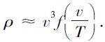
此处f (v/T )是一个只含有一个变数v/T 的普适函数。很明显，从理论上决定这个普适函数f 是有根本性的意义的——这正是普朗克所面临的任务。仔细的量度已经能相当准确地从经验上来确定这函数f .根据这些实验量度，普朗克首先找到了一个确实能把量度结果很好地表达出来的表示式：
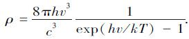
此处h 和k 是两个普适常数，其中第一个导致了量子论。这公式由于它的分母而显得有点特别。它是否可以从理论上加以论证呢？普朗克确实找到了一种论证，这种论证的缺陷，最初并没有被发现，这一情况对于物理学的发展可以说真正是个幸运。如果这公式是正确的，那么，借助于麦克斯韦理论，就可以由它算出准单色振子在辐射场中的平均能量E 为：
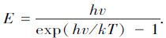
普朗克喜爱从理论上试图算出这平均能量。首先热力学对于这种尝试再也帮不了什么忙，麦克斯韦理论同样也帮不了忙。但是，在这公式中，非常鼓舞人心的是下述情况。它在高温时（在v 是固定的情况下）得出如下的表示式：
E=kT .
这式子同气体分子运动论中所得出的作一维弹性振动的质点的平均能量的表示式相同。在气体分子运动论中，人们得到
E =（R/N ）T .
此处R 是气体状态方程的常数；N 是每克分子的分子数，从这个常数，可以算出原子的绝对大小。使这两个式子相等，我们就得到
N=R/k .
因而普朗克公式中的一个常数给我们准确地提供了原子的真实大小。其数值同用气体分子运动论定出的N 符合得相当令人满意，尽管后者并不很准确。
普朗克清楚地认识到这是一个重大的成功。但是这件事有一个严重的缺陷，幸而当初普朗克没有注意到。由于同样的考虑，应当要求E=kT 这一关系对于低的温度也必须同样有效。然而，在这种情况下，普朗克公式和常数h 也就完蛋了。因此，从现有的理论所得出的正确结论应当是： 要么由气体理论给出的振子的平均动能是错误的，那就意味着驳斥了〔统计〕力学；要么由麦克斯韦理论求得的振子的平均动能是错误的，那就意味着驳斥了麦克斯韦理论。在这样的处境下，最可能的是，这两种理论都只有在极限情况下是正确的，而在其他情况下则是不正确的。我们往后会看到，情况确实是如此。如果普朗克得出了这样的结论，那么，他也许就不会作出他的伟大发现了，因为这样就会剥夺他的纯粹思考的基础。
现在回到普朗克的思考。根据气体分子运动论，玻耳兹曼已经发现，除了一个常数因子外，熵等于我们所考察的状态的“几率”的对数。通过这种见解，他认识到在热力学意义上的“不可逆”过程的本质。然而，从分子力学的观点来看，一切过程都是可逆的。如果人们把由分子论定义的状态称为微观描述的状态，或者简称为微观状态，而把由热力学描述的状态称为宏观状态，那么，属于一个宏观状态就有非常多个（Z 个）状态 [9] 。于是Z 就是一个所考察的宏观状态的几率的一种量度。这种观念，还由于它的适用范围并不局限于以力学为基础的微观描述，而显得格外重要。普朗克看到了这一点，并且把玻耳兹曼原理应用于一种由很多个具有同样频率v 的振子所组成的体系。宏观状态是由所有这些振子振动的总能量决定，而微观状态则由每一单个振子的（瞬时）能量决定。因此，为了能用一个有限的数来表示属于一个宏观状态的微观状态的数目，他把总能量分为数目很大但还是有限个数的相同的能量元ε ，并问在振子之间分配这些能量元的方式能有多少。于是，这个数目的对数就提供这体系的熵，并因此（通过热力学的方法）提供这体系的温度。当普朗克为他的能量元ε 选取ε=hv 的值时，他就得到了他的辐射公式。在这样做时，决定性的因素在于只有为ε选取一个确定的有限值，也就是不使它趋于极限ε =0，才能有这一结果。这种思考方式不是一下子就能看出它同推导过程的其他方面所依据的力学和电动力学的基础是相矛盾的。可是，实际上，这种推导暗中假定了单个振子只能以大小为hv 的“量子”吸收和发射能量，也就是说，不论是可振动的力学结构的能量，还是辐射的能量，都只能以这种量子方式进行转换。这是同力学定律和电动力学定律相违背的。在这里，同动力学的矛盾是基本的，而同电动力学的矛盾可能没有那么基本。因为辐射能量密度的表示式虽然同麦克斯韦方程是相容的，但它并不是这些方程的必然结果。以这个表示式为基础的斯忒藩-玻耳兹曼定律和维恩定律是同经验相符合的这一事实，就显示了这个表示式提供着重要的平均值。
在普朗克的基本工作发表以后不久，所有这些我都已十分清楚；以致尽管没有一种古典力学的代替品，我还是能看出，这条温度-辐射定律，对于光电效应和其他同辐射能量的转换有关的现象，以及（特别是）对于固体的比热，将会得出什么结果。可是，我要使物理学的理论基础同这种认识相适应的一切尝试都失败了。这就像一个人脚下的土地都被抽掉了，使他看不到哪里有可以立足的巩固基地。至于这种摇晃不定、矛盾百出的基础，竟足以使一个具有像玻尔(N. Bohr)那样独特本能和机智的人发现光谱线和原子中电子壳层的主要定律以及它们对化学的意义。这件事对我来说，就像是一个奇迹——而且即使在今天，在我看来仍然像是一个奇迹。这是思想领域中最高的音乐神韵。
在那些年代里，我自己的兴趣主要不在于普朗克的成就所得出的个别结果，尽管这些结果可能非常重要。我的主要问题是： 从那个辐射公式中，关于辐射的结构，以及更一般地说，关于物理学的电磁基础，能够得出什么样的普遍结论呢？在我深入讨论这个问题之前，我必须简要地提到关于布朗（Brown）运动及有关课题（起伏现象）的一些研究。这些研究主要是以古典的分子力学为根据的。在不知道玻耳兹曼和吉布斯（W. Gibbs）的已经发表而且事实上已经把问题彻底解决了的早期研究工作的情况下，我发展了统计力学，以及以此为基础的热力学的分子运动论。在这里，我的主要目的是要找到一些事实，尽可能地确证那些有确定的有限大小的原子的存在。这时我发现，按照原子论，一定会有一种可以观察到的悬浮微粒的运动，而我并不知道，关于这种“布朗运动”的观察实际上早已是人所共知的了。最简单的推论是以如下的考虑为根据的。如果分子运动论原则上是正确的，那么那些可以看得见的粒子的悬浮液就一定也像分子溶液一样，具有一种能满足气体定律的渗透压。这种渗透压同分子的实际数量有关，亦即同一克当量中的分子个数有关。如果悬浮液的密度并不均匀，那么这种渗透压也会因此在空间各处有所不同，从而引起一种趋向均匀的扩散运动，这种扩散运动可以从已知的粒子迁移率计算出来。但另一方面，这种扩散过程也可以看作是悬浮粒子因热骚动而引起的、原来不知其大小的无规则位移的结果。通过把这两种考虑所得出的扩散通量的数值等同起来，就可以定量地得到这种位移的统计定律，也就是布朗运动定律。这些考查同经验的一致，以及普朗克根据辐射定律（对于高温）对分子的真实大小的测定，使当时许多怀疑论者，如奥斯特瓦耳德（W.Ostwald）、马赫等相信了原子的实在性。这些学者之所以厌恶原子论，无疑可以溯源于他们的实证论的哲学观点。这是一个有趣的例子，它表明即使是有勇敢精神和敏锐本能的学者，也可能因为哲学上的偏见而妨碍他们对事实作出正确解释。这种偏见——至今还没有灭绝——就在于相信毋须自由的概念构造，事实本身就能够而且应该为我们提供科学知识。这种误解之所以可能，只是因为人们不容易认识到，经过验证和长期使用而显得似乎同经验材料直接相联系的那些概念，其实都是自由选择出来的。
布朗运动理论的成功再一次清楚地表明： 当速度对时间的高阶微商小到可以忽略不计时，把古典力学用于这种运动，总是提供可靠的结果。依据这种认识，可以提出一种比较直接的方法，使我们能够从普朗克公式中求得一些关于辐射结构的知识。也就是说，我们可以得出这样的结论： 在充满辐射的空间里，一面（垂直于它自身的平面）自由运动着的准单色反射镜，必定要作一种布朗运动，其平均功能等于
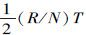
（R =1克分子的气体方程中的常数，N 等于每克分子中的分子数目，T =绝对温度）。如果辐射没有受局部起伏的支配，镜子就会渐趋静止，因为，由于它的运动，在它的正面反射的辐射要比背面反射的多。可是由于组成辐射的波束互相干涉，镜子必然要遇到作用在它身上的压力的某种不规则的起伏，这种起伏必定能够从麦克斯韦理论计算出来。然而，这种计算表明，这些压力起伏（特别是在辐射密度很小的情况下）要给镜子以平均动能 是无论如何也做不到的。为了能够得到这个结果，就必须假定另外有第二种压力起伏（它是不能从麦克斯韦理论推导出来的）。这种压力起伏必须符合于这样的假定： 辐射能量是由许多能量为hv （动量为hv/c ，c =光速）好像集中在一点上的不可分割的量子所组成的，而量子在被反射时也是不可分割的。这种考虑以激烈而直接的方式表明，普朗克的量子必须被认为是一种直接的实在，因而，从能量角度来看，辐射必定具有一种分子结构。这当然是同麦克斯韦理论相矛盾的。直接依据玻耳兹曼的熵-几率关系（取几率等于统计的时间频率）对辐射所作的考察也得到同样的结果。辐射的（和物质微粒的）这种二象性是实在的一种主要特性，它已经由量子力学以巧妙而且非常成功的方式作了解释。几乎当代所有物理学家都认为这种解释基本上是最终的解释，而在我看来，它不过是一条暂时的出路。关于这一点，有些意见留待以后再谈。早在1900年以后不久，即在普朗克的首创性工作以后不久，这类思考已使我清楚地看到： 无论是力学还是热力学（除非在极限情况下）都不能要求严格有效。渐渐地我对那种根据已知事实用构造性的努力去发现实在的规律的可能性感到绝望了。我努力得愈久，就愈加绝望，也就愈加确信只有发现一个普遍的形式原理，才能使我们得到可靠的结果。我认为热力学就是放在我面前的一个范例。在那里，普遍原理是用这样一条定理来说明的： 自然规律是这样的，它们使（第一类和第二类）永动机（perpetuum mobile）的制造成为不可能。但是这样一条普遍原理究竟是怎样找到的呢？经过十年沉思以后，我从一个悖论中得到了这样一个原理。这个悖论我在16岁时就已经无意中想到了： 如果我以速度c（真空中的光速）追随一条光线运动，那么我就应当看到，这样一条光线就好像一个在空间中振荡着而停滞不前的电磁场。可是，无论是依据经验，还是按照麦克斯韦方程，看来都不会有这样的事情。从一开始，在我直觉地看来就很清楚，从这样一个观察者的观点来判断，一切都应当像一个相对于地球是静止的观察者所看到的那样按照同样的一些定律进行。因为，第一个观察者怎么会知道或者能够判明他是处在均匀的快速运动状态中呢？
人们看得出，这个悖论已经包含着狭义相对论的萌芽。今天，当然谁都知道，只要时间的绝对性或同时性的绝对性这条公理不知不觉地留在潜意识里，那么任何想要令人满意地澄清这个悖论的尝试，都是注定要失败的。清楚地认识这条公理以及它的任意性，实际上就意味着问题的解决。对于发现这个中心点所需要的批判思想，就我的情况来说，特别是由于阅读了戴维·休谟和恩斯特·马赫的哲学著作而得到决定性的进展。
人们必须清楚地了解，在物理学中一个事件的空间坐标和时间值意味着什么。要从物理上说明空间坐标，就得预先假定一个刚性的参照体，而且，这参照体必须处在多少是确定的运动状态中（惯性系）。在一个既定的惯性系中，坐标就是用（静止的）刚性杆作一定量度的结果（人们始终应当意识到，原则上有刚性杆存在的假定，是一种由近似的经验启示的，但在原则上却是任意的假定）。由于对空间坐标作这样一种解释，欧几里得几何的有效性问题便成为一个物理学上的问题了。
如果人们想用类似的方法来说明一个事件的时间，那就需要一种量度时间差的工具（这是借助于一个空间广延足够小的体系来实现的自行决定的周期过程）。一只相对于惯性系是静止的钟规定着一个“当地时间”。如果人们已经定出一种方法去相互“校准”这些〔空间各个点上的〕钟，那么，这些空间点的当地时间合在一起，就是所选定的那个惯性系的“时间”。人们看到，根本没有必要先验地认为这样定义的“时间”在不同的惯性系中是彼此一致的。假如在日常生活的实际经验中光（因为c的数值很大）看起来不像是一种能断定绝对同时性的工具，那么，人们早就该注意到这一点了。
关于（原则上）有（理想的，即完善的）量杆和时钟存在这样的假定并不是彼此无关的；因为，只要光速在真空中恒定不变的假设不导致矛盾，那么，在一根刚性杆两端之间来回反射的一个光信号就构成一只理想的时钟。
上述悖论现在就可以表述如下。从一个惯性系转移到另一个惯性系时，按照古典物理学所用的关于事件在空间坐标和时间上的联系规则，下面两条假定是彼此不相容的（尽管两者各自都是以经验为依据的）：
1. 光速不变，
2. 定律（并且特别是光速不变定律）同惯性系的选取无关（狭义相对性原理）。
狭义相对论所依据的认识是： 如果事件的坐标和时间的换算是按照一种新的关系（“洛伦兹变换”），那么这两个假定就是彼此相容的了。根据前面对坐标和时间的物理解释，这绝不仅仅是一种约定性的步骤，而且还包含着某些关于运动着的量杆和时钟的实际行为的假说，而这些假说是可以被实验证实或者推翻的。
狭义相对论的普遍原理包含在这样一个假设里： 物理定律对于（从一个惯性系转移到另一个任意选定的惯性系的）洛伦兹变换是不变的。这是对自然界定律的一条限制性原理，它可以同不存在永动机这样一条作为热力学基础的限制性原理相比拟。
首先就这理论对“四维空间”的关系说几句话。认为狭义相对论似乎首先发现了，或者第一次引进了物理连续区的四维性，这是一种广泛流传的错误。情况当然不是这样的。古典力学也是以空间和时间的四维连续区为基础的。只是在古典物理学的四维连续区中，时间值恒定的截面有绝对的实在性，即同参照系的选取无关。因此，四维连续区就自然而然地分为一个三维连续区和一个一维连续区（时间），所以，四维的考察方式就没有必要强加于人了。与此相反，狭义相对论在空间坐标作为一方和时间坐标作为另一方如何进入自然规律的方式方法之间，创立了一种形式上的依存关系。
闵可夫斯基对这理论作出了重要贡献。在闵可夫斯基的研究之前，为了检验一条定律在洛伦兹变换下的不变性，人们就必须对它实行一次这样的变换；可是闵可夫斯基却成功地引进了这样一种形式体系，使定律的数学形式本身就保证了它在洛伦兹变换下的不变性。由于创造了四维张量演算，他对四维空间也就得到了同通常的矢量演算对三维空间所得到的结果一样。他还指出，洛伦兹变换（且不管由于时间的特殊性造成的正负号的不同）不是别的，只不过是坐标系在四维空间中的转动。
首先，对上述理论提一点批评性意见。人们注意到，这理论（除四维空间外）引进了两类物理的东西，即1. 量杆和时钟，2. 其余一切东西，比如电磁场、质点等等。这在某种意义上是不一致的。严格地说，量杆和时钟应当表现为基本方程的解（由运动着的原子实体所组成的客体），而不是似乎理论上独立的实体。可是这种做法是有道理的，因为一开始就很清楚，这理论的假设不够有力，还不足以从其中为物理事件推导出足够完备的而且充分避免任意性的方程，以便以此为基础来建立量杆和时钟的理论。如果人们根本不愿放弃坐标的物理解释（这本来是可能的），那么，最好还是允许这种不一致性，然而有责任在理论发展的后一阶段把它消除。但是，人们不应当把上述过失合法化，以致把间隔想象为本质上不同于其他物理量的特殊类型的物理实体（“把物理学归结为几何学”等等）。我们现在要问，物理学中有哪些具有确定性质的认识应该归功于狭义相对论。
1. 在距离上分隔开的事件之间没有同时性，因而也没有牛顿力学意义上的直接的超距作用。虽然，按照这种理论，引入以光速传播的超距作用是可以想象的，但是却显得很不自然。因为在这样一种理论中，不可能有能量守恒原理的合理陈述。因此，看来不可避免地要用空间的连续函数来描述物理实在。所以质点就难以再被认为是理论的基本概念了。
2. 动量守恒定律和能量守恒定律融合成为单独的一条定律。封闭体系的惯性质量就是它的能量，因此，质量不再是独立的概念了。
附注。光速c 是那些作为“普适常数”在物理方程中出现的物理量之一。可是，如果人们用光走过1厘米的时间作为时间单位，来代替秒，那么c 在这方程中就不再出现。在这个意义上，人们可以说，常数c 只是一个表观的普适常数。
如果采用适当选取的“自然”单位（比如电子的质量和半径）来代替克和厘米，那么还可以从物理学中再消去另外两个普适常数，这是很明显的，而且也是大家所公认的。
设想我们这样做了，那么在物理学的基本方程中就只能出现“无量纲的”常数。关于这些常数，我想讲这样一条命题，它在目前，除了相信自然界是简单的和可理解的以外，还不能以其他任何东西为依据。这命题就是： 这种任意的常数是不存在的。也就是说，自然界是这样构成的，它使得人们在逻辑上有可能规定这样一些十分确定的定律，而在这些定律中只能出现一些完全合理地确定了的常数（因而，不是那些在不破坏这种理论的情况下也能改变其数值的常数）。
狭义相对论的起源要归功于麦克斯韦的电磁场方程。反过来，后者也只有通过狭义相对论才能在形式上以令人满意的方式被人们理解。麦克斯韦方程是对于一种从矢量场导出的反对称张量所能建立的最简单的洛伦兹不变的场方程。要不是从量子现象中我们知道麦克斯韦理论不能正确说明辐射的能量特性，那么，这一切本来是会令人满意的。但是，怎样才能自然地修改麦克斯韦理论呢？对于这个问题，狭义相对论也提供不出充分的依据。而且对于马赫的问题（为什么惯性系在物理上比其他坐标系都特殊，这是怎么一回事？）这个理论同样作不出回答。
当我力图在狭义相对论的框架里把引力表示出来的时候，我才完全明白，狭义相对论不过是必然发展过程的第一步。在用场来解释的古典力学中，引力势表现为一种标量场（只有一个分量的、理论上可能的最简单的场）。首先，引力场的这种标量理论，很容易做到对于洛伦兹变换群是不变的。因此，下述纲领看来是自然的： 总的物理场是由一个标量场（引力场）和一个矢量场（电磁场）组成的；以后的认识也许最终还有必要引进更加复杂的场；但是开始时人们还不需要为此担心。
然而，实现这个纲领的可能性，一开始就成问题，因为这种理论必须把下面两件事结合在一起：
1. 根据狭义相对论的一般考虑，可以清楚地看到，物理体系的惯性质量随其总能量（因而，比如也随其功能）的增加而增加。
2. 根据很精确的实验，尤其是根据厄缶（Eötvös）的扭秤实验，在经验上非常精确地知道，物体的引力质量同它的惯性质量是完全相等的。
从1.和2.得知一个体系的重量以一种完全清楚的方式取决于它的总能量。如果理论不能做到这一点，或者不能自然地做到这一点，那么它就应当被抛弃。这条件可以极其自然地表述如下： 在既定的重力场中，一个体系的降落加速度同这降落体系的本性（因而特别是同它的能量含量）无关。
那么这就表明，在上述拟定的纲领的框子里，根本不能满足，或者无论如何不能以自然的方式满足这种基本情况。这就使我相信，在狭义相对论的框架里，是不可能有令人满意的引力理论的。
这时，我想到： 惯性质量同引力质量相等这件事，或者降落加速度同落体的本性无关这件事，可以表述如下： 如果在一个（空间范围很小的）引力场里，我们不是引进一个“惯性系”，而是引进一个相对于它作加速运动的参照系，那么事物就会像在没有引力的空间里那样行动。
这样，如果我们把物体对于后一参照系的行为，看作是由“真实的”（而不只是表观的）引力场引起的，那么像原来的参照系一样，我们有同样的理由把这个参照系看作是一个“惯性系”。
因此，如果人们认为，可能有任意广延的引力场，这种场不是一开始就受到空间界限的限制的，那么，“惯性系”这个概念就成为完全空洞的了。这样，“相对于空间的加速度”这个概念就失去了任何意义，从而惯性原理连同马赫的悖论也都失去了任何意义。
因此，惯性质量同引力质量相等的事实，很自然地使人认识到，狭义相对论的基本要求（定律对于洛伦兹变换的不变性）是太狭窄了，也就是说，我们必须假设，定律对于四维连续区中的坐标的非线性变换也是不变的。
这发生在1908年。为什么建立广义相对论还需要7年时间呢？其主要原因在于，要使人们从坐标必须具有直接的度规意义这一观念中解放出来，可不是那么容易的。它的转变大体上是以如下方式发生的。
我们从一个没有场的空虚空间出发，在狭义相对论的意义上，它——对于一个惯性系来说——是一切可以想象的物理状况中最简单的一个。现在我们设想引进一个非惯性系，假定这新的参照系相对于惯性系（在三维的描述中）在一个（适当地规定的）方向上作等加速运动，于是，对于这个参照系来说，就有一个静止的、平行的引力场。这时，这参照系可以被选定为刚性的，并具有欧几里得性质的三维度规关系。但是，场在其中显示为静止的那个时间，却不是用构造相同的静止的钟来量度的。从这个特例中，人们已经可以认识到，如果完全容许坐标的非线性变换，那么坐标也就失去了直接的度规意义。可是，如果人们想要使理论的基础适合于引力质量同惯性质量相等，并且想克服马赫关于惯性系的悖论，那么，就必须容许坐标的非线性变换。
但是，如果人们现在必须放弃给坐标以直接的度规意义（坐标的差=可量度的长度或时间），那就不可避免地要把一切由坐标的连续变换所能造成的坐标系都当作是等价的。
因此，广义相对论由以出发的是下述原理： 自然规律是用那些对于连续的坐标变换群是协变的方程来表示的。这种群在这里也就代替了狭义相对论的洛伦兹变换群，后一种群便成为前者的一个子群。
这种要求本身，当然不足以成为导出物理学基本方程的出发点。起初，人们甚至于会否认这一要求本身就包含着一种对物理定律的真正限制；因为一个最初只是对某些坐标系规定的定律，总有可能重新加以表述，使新的表述方式具有广义的协变形式。此外，从一开始就很清楚，可以建立无限多个具有这种协变性质的场定律。但是，广义相对性原理的著名的启发性意义就在于，它引导我们去探求那些在广义协变的表述形式中尽可能简单的方程组；我们应当从这些方程组中找出物理空间的场定律。凡是能用这样的变换进行相互转换的场，它们所描述的都是同一个实在状况。
对于在这个领域里从事探索的人们来说，他们的主要问题是： 可以用来表示空间的物理性质（“结构”）的量（坐标的函数）是属于哪一种数学类型？然后才是： 这些量满足哪些方程？
我们今天还不可能对这些问题作出确实可靠的回答。最初表述广义相对论时所选择的途径可以表述如下。即使我们还不知道该用什么样的场变数（结构）来表征物理空间，但是我们确实知道一种特殊情况，那就是狭义相对论中的“没有场”的空间。这种空间的特征是： 对于一个适当选取的坐标系来说，属于相邻两点的表示式
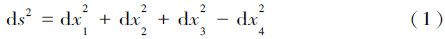
代表一个可量度的量（距离的平方），因此它具有实在的物理意义。对于任意的坐标系，这个量可表示如下：
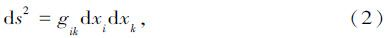
式中的指标应从1记到4.这些gik 形成一个对称张量。如果对场（1）进行一次变换以后，gik 关于坐标的一阶导数不等于零，那么在上述考虑中对于这个坐标系来说，就存在着一个引力场，而且是一个十分特殊的引力场。多亏黎曼对n 维度规空间所作的研究，这种特殊的场总是能够表征为：
1. 由度规（2）的系数所形成的黎曼的曲率张量Riklm 等于零。
2. 对于惯性系（对它来说，（1）是有效的，）一个质点的轨道是一条直线，因此是一条极值曲线（短程线）。然而，后者已经是以（2）为依据的关于运动定律的一种表征。
因而物理空间的普遍定律，必须是上述定律的一种推广。我现在假定，有两个推广的步骤：
a） 纯粹的引力场；
b） 一般的场（其中也会出现一些以某种方式同电磁场相对应的量）。
情况a）的特征是： 这个场仍然可以用黎曼度规（2），也就是用对称张量来表示，但是，不能写成（1）的形式（除了在无限小区域中）。这意味着，在情况a）中，黎曼张量不等于零。可是，很明显，在这种情况下，必然有一条作为这条定律的一种推广（放宽）的场定律是有效的。如果这条定律也应当含有二阶微分，而且二阶导数是线性的，那么，只有经过一次降秩而得到的方程
0=Rkl =gim Riklm
才能被认为是情况a)的场方程。而且，如果我们假定，在情况a)中，短程线仍然表示质点的运动定律，那么，这也显得很自然。
那时，我认为，冒险尝试把总场 b）表示出来，并为它确定场定律，是没有希望的。因此，我宁愿为表示整个物理实在建立一个初步的形式框架；至少为了能初步研究广义相对性的基本思想是否有用，这是必要的。这是这样进行的：
在牛顿的理论中，在物质密度ρ 等于零的那些点上，引力场定律可以写成：
Δφ =0
（φ =引力势）。一般则写成（泊松方程）
Δφ =4πkρ .(ρ =质量密度)。
在引力场的相对论性理论中，Rik 代替了Δφ . 于是，我们在等式右边也必须同样用一个张量来代替ρ .因为我们从狭义相对论知道，（惯性）质量等于能量，所以在等式右边应该是能量密度的张量，就其不属于纯粹的引力场而论，更准确地说，应该是总的能量密度的张量。这样，人们便得到场方程
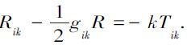
左边第二部分是由于形式上的理由而加进去的；左边之所以写成这样形式，是要使它的散度在绝对微分学意义下恒等于零。右边是对一切在场论意义上看来其含意还成问题的东西所作的一种形式上的总括。当然，我一刻也没有怀疑过，这种表述方式仅仅是一种权宜之计，以便给予广义相对性原理以一个初步的自圆其说的表示。因为它本质上不过是一种引力场理论，这种引力场是有点人为地从还不知道其结构的总场中分离出来的。
如果说，在上述理论中——除要求〔场〕方程对连续坐标变换群有不变性外——还有什么东西可能被认为是有最终意义的话，那么，这就是关于纯引力场极限情况的理论及其对空间度规结构的关系。因此，我们接下去就只讲纯引力场的方程。
这些方程的特点，一方面在于它们的复杂结构，特别在于它们对于场变数及其导数的非线性特征，另一方面在于变换群几乎是以强制的必然性决定着这种复杂的场定律。如果人们停留在狭义相对论上，即停留在对洛伦兹群的不变性上，那么在这个比较狭小的群的框架里，场定律Rik =0仍然是不变的。但是，从较狭小的群的观点看来，最初也没有理由要用像对称张量gik 所表示的那么复杂的结构来表示引力。然而，假如人们能为此找到足够的理由，那么就会有非常多个由量gik 构成的场定律，它们对于洛伦兹变换（但不是对一般的变换群）都是协变的。可是，即使从所有可以想像得到的洛伦兹不变的定律中，偶尔碰巧猜中了一条属于较宽广的群的定律，人们还是没有达到广义相对性原理所已达到的认识程度。因为，从洛伦兹群的观点看来，两个解如果可以用非线性坐标变换来互相转换，也就是说，从范围较宽广的群的观点看来，它们只是同一个场的不同表示，那么这两个解就会被错误地认为在物理上是各不相同的。
关于〔场〕结构和〔变换〕群再提一点一般性的意见。显然，一般说来，人们会这样来判断一个理论： 作为理论的基础的“结构”愈简单，场方程对之不变的〔变换〕群愈宽广，那么这理论也就愈完善。现在人们可以看出，这两个要求是互相冲突的。比如，按照狭义相对论（洛伦兹群），人们能为可想象的最简单的结构（标量场）建立一条协变定律，而在广义相对论中（比较宽广的坐标连续变换群），只是对于较复杂的对称张量结构才有一条不变的场定律。我们已经提出了物理上的一些理由来说明，在物理学中，必须要求对于较宽广的群是不变的 [10] ： 根据纯数学的观点，我看不出有必要为较宽广的群而牺牲较简单的结构。
广义相对论的群第一次不再要求最简单的不变定律关于场变数及其微商该是线性的和齐次的。这一点由于下述原因而具有基本的重要性。如果场定律是线性的（和齐次的），那么，两个解之和也是一个解；比如，空虚空间中的麦克斯韦场方程就是这样。在这样一种理论中，不可能单单从场定律推导出那种能用方程组的各个解分别加以描述的物体之间的相互作用。因此，到现在为止的所有理论中，除场定律外，还需要有物体在场作用下运动的特殊定律。在相对论的引力论中，固然除场定律外，最初还独立地假定了运动定律（短程线）。可是，后来发现，这条运动定律并不需要（也不应该）独立地予以假定，因为它已经隐含在引力场定律之中了。
这种真正复杂情况的本质可以形象地说明如下： 一个单个的静止质点将由这样一个引力场来表示，除了这质点所在的地点以外，它到处都是非无限小的并且是正则的；而在质点所在的地点，场有一个奇点。可是，如果通过对场方程的积分来计算属于两个静止质点的场，那么，这个场除了在两个质点所在地点上有两个奇点外，还有一条由许多奇点组成的线，把这两个质点连接起来。可是，人们可以这样来规定质点的运动，使得由这些质点所决定的引力场，除质点所在地点以外，任何地方都不出现奇点。这些正是在第一级近似下由牛顿定律所描述的运动。因此，人们可以说： 物体是以这样的方式运动的，它使场方程〔的解〕除在质点所在地点以外，在空间里，没有任何地方出现奇点。引力方程的这种属性，同它们的非线性直接有关，而这种非线性则是较宽广的变换群的一个结果。
现在，人们当然可能会提出这样的反对意见： 如果允许在质点所在地点出现奇点，那么有什么理由可以禁止在空间的其他地方也出现奇点呢？如果引力场方程被看作是总场的方程，那么，这种反对意见就应当是正确的。可是，人们必须说，当我们愈趋近质点的位置时，就愈不能把质点的场看作是纯粹的引力场。如果人们有总场的场方程，那么势必要求： 粒子本身到处都可以被描述为完备的场方程的没有奇点的解。只有在这种情况下，广义相对论才是一种完备的理论。
在我着手讨论如何完成广义相对论问题以前，我必须对我们时代最成功的物理理论，即统计性量子理论表示我的态度，这种理论大约在25年以前就已经具有贯彻一致的逻辑形式。现在，它是能对微观力学过程的量子特征方面的经验提供一个统一理解的唯一的理论。以这个理论为一方，以相对论为另一方，两者在一定意义上都被认为是正确的，虽然迄今为止想把它们融合起来的一切努力都遇到了抵制。这也许就是当代理论物理学家中，对于未来物理学的理论基础将是怎样的这个问题存在着完全不同见解的原因。它会是一种场论吗？它会是一种本质上是统计性的理论吗？在这里我将简单地说一说我对这个问题的想法。
物理学是从概念上掌握实在的一种努力，至于实在是否被观察，则被认为是无关的。人们就是在这种意义上来谈论“物理实在”的。在量子物理学以前，对这一点应当怎样理解，那是没有疑问的。在牛顿的理论中，实在是由空间和时间里的质点来表示的；在麦克斯韦的理论中，是由空间和时间里的场来表示的。在量子力学中，可就不是那么容易看得清楚了。如果有人问： 量子理论中的ψ 函数，是否正像一个质点系或者一个电磁场一样，在同样意义上表示一个实在的实际状况呢？那么，人们就会踌躇起来，不敢简单地回答“是”或者“不是”；为什么呢？因为，ψ 函数（在一个确定的时刻）所断言的是： 如果我在时间t 进行量度，那么在一个确定的已知间隔中能找到一个确定的物理量q （或p ）的几率是多少呢？在这里，几率被认为是一个可以在经验上测定的，因而确实是“实在的”量；只要我经常能造出同样的ψ 函数，并且每次都能进行q 的量度，我就能测定它。但是，每次测得的q 值是怎样的呢？有关的单个体系在量度前是否就已经有这个q 值呢？对于这些问题，在这个理论的框架里，没有确定的回答，因为，量度确实意味着外界对体系施加有限干扰的一个过程；因此，可以想象，只有通过量度本身，体系才能为被量度的数值q （或p ）得到一个确定的数值。为了作进一步的讨论，我设想有两个物理学家A和B，他们对ψ 函数所描述的实在状况持有不同的见解。
A. 〔认为〕对于体系的一切变量（在量度以前），单个体系都具有一个确定的q （或p ）值，而且，这个值就是在量度这个变量时所测得的。从这种观念出发，他会说： ψ 函数不是体系的实在状况的穷尽的描述，而是一种不完备的描述；它只是表述了我们根据以前对这体系的量度所知道的东西。
B. 〔认为〕单个体系（在量度前）没有一个确定的q （或p ）值。只有通过量度动作本身，并且结合由ψ 函数赋予量值的特有的几率，才能得出这个量度的值。从这种观念出发，他会（或者，至少他可以）说： ψ函数是体系的实在状况的一种穷尽的描述。
现在我们向这两位物理学家提出如下的情况： 有一个体系，在我们观察的时刻t 由两个局部体系S 1 和S 2 组成，而且在这个时刻，这两个局部体系在空间上是分开的，彼此（在古典物理学的意义上）也没有多大相互作用。假定这总体系在量子力学意义上是由一个已知的ψ 函数ψ 12 完备地来描述的。现在所有量子理论家对下面这一点都是一致的： 如果我对S 1 作一次完备的量度，那么从这量度结果和ψ 12 中就得到体系S 2 的一个完全确定的ψ 函数ψ 2 .于是ψ 2 的特征便取决于我对S 1 所作的是哪一种量度。现在，我觉得，人们可以谈论局部体系S 2 的实在状况了。开初，在对S 1 进行量度以前，我们对这个实在状况的了解，比我们对一个由ψ 函数描述的体系的了解还少。但是，照我的看法，我们应当无条件地坚持这样一个假定： 体系S 2 的实在状况（状态），同我们对那个在空间上同它分开的体系S 1 所采取的措施无关。可是，按照我对S 1 所作的量度的类型，对于第二个局部体系，我将得到不同的ψ 2 ： （ψ 2 ，ψ 1 2 ，……）。但是，S 2 的实在状况应当同S 1 所碰到的事情无关。因此，对于S 2 的同一个实在状况，可以（按照人们对S 1 选择哪一种量度）找到不同类型的ψ 函数。（人们只有通过下述办法才能避开这种结论： 要么假定对S 1 的量度会用传心术“传心术” [11] 的办法改变S 2 的实在状况；要么根本否认空间上互相分开的事物能有独立的实在状况。在我看来，两者都是完全不能接受的。）
如果现在物理学家A和B认为这种考虑是站得住脚的，那么B就必须放弃他认为ψ 函数是关于实在状况的一种完备描述这个观点。因为，在这种情况下，S 2 的同一个实在状况，不可能同两种不同类型的ψ 函数相对应。
因此，目前这理论的这种统计特征应当是量子力学对体系描述的不完备性的一个必然结果，而且也不再有任何理由可以假定物理学将来的基础必须建立在统计学上。
我的意见是，当前的量子理论，借助于某些确定的、主要取自古典力学的基本概念，形成了一种对联系的最适宜的表述方式。可是，我相信，这种理论不能为将来的发展提供任何有用的出发点。正是在这一点上，我的期望同当代大多数物理学家有分歧。他们相信，用满足微分方程的空间的连续函数来描述事物的实在状态的那种理论不可能说明量子现象的主要方面（一个体系的状态的变化，表面上是跳跃式的，在时间上是不确定的，能量基元同时具有粒子性和波动性）。他们也想到，人们以这种方式无法理解物质和辐射的原子结构。他们可以料想，由这样一种理论的考查所能得出的微分方程组，根本不会有那种在四维空间里到处都是正则的（没有奇点的）解。但是，在一切之上，他们首先相信，基元过程外观上跳跃式的特征，只能用一种本质上是统计性的理论来描述，而在这理论中，体系的跳跃式变化，是用可能实现的状态的几率的连续变化来说明的。
所有这些意见，给我的印象是十分深刻的。可是，在我看来，起决定性作用的问题是： 在理论的目前情况下，可以作哪些尝试才有点成功的希望？在这一点上，在引力论中的经验为我的期望指明了方向。照我的看法，这些方程，比所有其他物理方程有更多的希望可以说出一些准确的东西。比如，人们可以取空虚空间里的麦克斯韦方程来作比较。这些方程是同无限弱的电磁场的经验相符合的表述方式。这个经验根源，已经决定了它们的线性形式；可是，上面已经强调指出，真正的定律不可能是线性的。这种〔线性〕定律对于它们的解来说是满足叠加原理的，因而并不含有关于基元物体的相互作用的任何论断。真正的定律不可能是线性的，而且也不可能从这些线性方程中得到。我从引力论中还学到了另外一些东西： 经验事实不论收集得多么丰富，仍然不能引导到提出如此复杂的方程。一个理论可以用经验来检验。但是并没有从经验建立理论的道路。像引力场方程这样复杂的方程，只有通过发现逻辑上简单的数学条件才能找到，这种数学条件完全地或者几乎完全地决定着这些方程。但是，人们一旦有了那些足够强有力的形式条件，那么，为了创立理论，就只需要少量关于事实的知识；在引力方程的情况下，这就是四维性和表示空间结构的对称张量，这些连同对于连续变换群的不变性，实际上就完全决定了这些方程。
我们的任务是要为总场找到场方程。所求的结构必须是对称张量的一种推广。它的群一点也不应当比连续坐标变换群狭小。如果人们现在引进一个更丰富的结构，那么这个群就不会再像在以对称张量作为结构的情况下那样强有力地决定着方程了。因此，如果能够做到类似于从狭义相对论到广义相对论所采取的步骤，把群再一次扩充，那该是最美的了。我曾特别尝试过引用复数坐标变换群。所有这样的努力都没有成功。我也放弃了公开地或隐蔽地去增加空间维数，这种努力最初是由卡鲁查（T. Kaluza）开始的，而且这种努力以及由此变化而来的投影形式，至今还有其拥护者。我们只限于四维空间和连续的实数坐标变换群。在多年徒劳的探索之后，我认为，下面概述的解在逻辑上是最令人满意的。
代替对称的gik (gik =gik )，引进非对称的张量gik .这个量是由一个对称的部分sik 和一个实数的或纯虚数的反对称部分aik 相加而成的，因此：
gik =sik +aik .
从群的观点看来，s 和a 的这种组合是任意的，因为张量s 和a 各自具有张量的特征。但是，结果表明，这些gik （作为整体来看）在建立新理论中所起的作用，很像对称的gik 在纯引力场理论中所起的作用。
空间结构的这种推广，从我们的物理知识的观点看来，似乎也是很自然的，因为我们知道，电磁场同反对称张量有关。
此外，对于引力理论重要的是： 由对称的gik 有可能形成标量密度
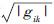
，以及按照定义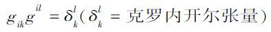
有可能形成抗变张量gik .对于非对称的gik ，这些构成可以用完全对应的方式来定义，对于张量密度也是如此。
在引力理论中更重要的是，对于一个既定的对称的gik 场，可以定义一个场Γl ik ，它的下标是对称的，从几何学上来看，它支配着矢量的平移。与此相似，对于非对称的gik ，可以按照公式
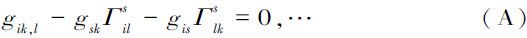
来定义一个非对称的Γl ik .这公式同对称的g 的相应关系是符合的，自然只是在这里才有必要注意g 和Γ的下标的位置。
正如在gik 是对称的理论中一样，可以由Γ 形成曲率Ri k lm ，并由此形成降秩的曲率Rkl .最后，运用变分原理以及（A），可以找到相容的场方程 [12] ：
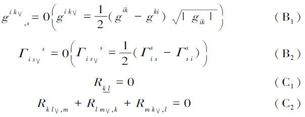
因此，如果（A）得到满足，两个方程（B1 ），（B2 ）中的每一个就是另一个的结果。
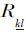
表示Rik 的对称部分，而Rkl ∨ 则是它的反对称部分。在gik 的反对称部分等于零的情况下，这些公式就简化成（A）和（C1 ）——纯引力场的情况。
我相信，这些方程是引力方程的最自然的推广 [13] 。要考验它们在物理上是否有用，则是一项极其艰巨的任务，因为只靠近似法是办不到的。问题是： 这些方程对于全部空间都没有奇点的解是什么？
如果这些叙述向读者说明了我毕生的努力是怎样相互联系的，以及这些努力为什么已导致一种确定形式的期望，那就已经达到目的了。
[1] 这篇《自述》（Autobiographisches ）写于1946年，发表在希耳普（P.A.Schilpp）编的为庆祝爱因斯坦七十岁生日的论文集《阿尔伯特·爱因斯坦： 哲学家-科学家》(Albert Einstein: Philosopher-Scientist )里，纽约Tudor出版公司，1949年。这里译自该书1-95页。——编译者注。
[2] 指雅各布·爱因斯坦（Jakob Einstein）。而指导他自学“几何学小书”的则是麦克斯·塔耳玫（Max Talmey），当时是慕尼黑大学的医科学生。——编译者注。
[3] 这包括奥古斯特·弗普耳（August Föppl,1854-1924）的著作《空间结构》（Das Fachwerk in Raume , 1892）和《麦克斯韦的电学理论》（Maxwells Theorie der Elektrizität , 1894）。这二本著作对爱因斯坦建立相对论有重大启发作用。——编译者注。
[4] 布里丹（John Buridan, 1300？-1360），14世纪法国唯名论哲学家，是奥卡姆（William of Occam）的信徒，倾向于决定论，认为意志是环境决定的。反对他的人提出这样一个例证来反驳他： 假定有一只驴子站在两堆同样大、同样远的干草之间，如果它没有自由选择的意志，它就不能决定究竟该先吃哪堆干草，结果它就会饿死在这两堆干草之间。后人就把这个论证叫做“布里丹的驴子”。——编译者注。
[5] 据爱因斯坦晚年时的回忆，大约在1897年，是贝索（M.Besso）使他注意到这本书。——编译者注。
[6] 原文是1/v .——编译者注。
[7] 按照通常使用的符号，这个微分方程（即拉普拉斯方程）应当写成Δφ =0（或者▽2 φ =0），而在本文的后面作者也是这样写的。——编译者注。
[8] 原文为nonchromatische, 疑是monochromatische之误。——编译者注。
[9] 此处的Z 个“状态”，显然是指Z 个“微观状态”。——编译者注。
[10] 保留较狭小的群，而同时又以较复杂的（张量）结构作为广义相对论的基础，意味着一种天真的前后矛盾。罪恶终究是罪恶，即使它是由其他方面都非常令人尊敬的人所犯的。——原注。
[11] （telepathy）是西方一些江湖骗子搞起的一门伪科学，他们伪造一些假象，扬言人与人之间可以不通过物质媒介而直接发生精神感应（所谓心灵交通），甚至胡说人同鬼魂（死人）也会有精神感应。19世纪以来，西方和俄国也有不少科学家迷信这门伪科学。——编译者注。
[12] 下面几个方程中，原书德文原文和英译中的符号都有错误，这里已作了更正。——编译者注。
[13] 照我的看法，如果在连续区的基础上对物理实在作穷尽的描述这样一条道路证明毕竟是行得通的话，那么，这里所提出的理论就有相当大的可能性会被证实是有效的。——原注。